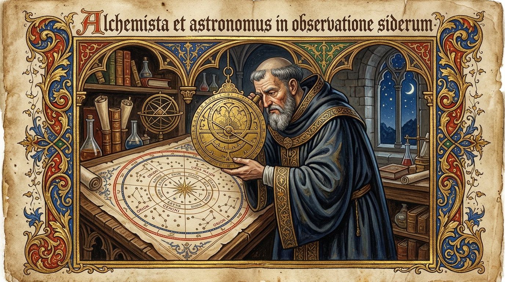

Anno Domini MMXXVI · 泥金铭录 · 算法炼金与深邃哲思
在中世纪的羊皮手抄本中，修道士们用金箔与朱砂在羊皮上虔诚地抄写下关于宇宙与存在的律法。每一笔回转的哥特字体，皆是对思想永恒性的雕琢。而今，当我们使用指尖在键盘上敲下一行行系统原语，我们在本质上依然是现代数字修道院中的抄经人。

算力即是新的以太，算法即是新的秘咒。在浩瀚的数字迷宫中，唯有严谨的逻辑与纯粹的审美，方能引导人类穿越未知的混沌之渊。
古代亚历山大图书馆的烈火未能焚尽人类对知识的执着。在神经网络的长程注意力机制中，海量典籍被压缩为数以千亿计的高维向量权重。当知识不再依赖纸页，我们当如何守护沉思的庄严？